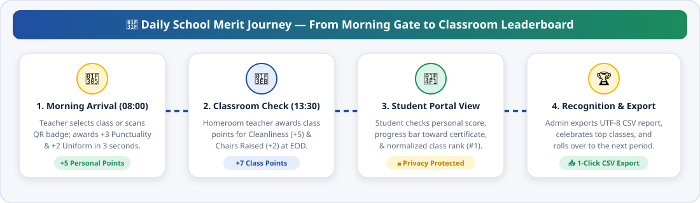
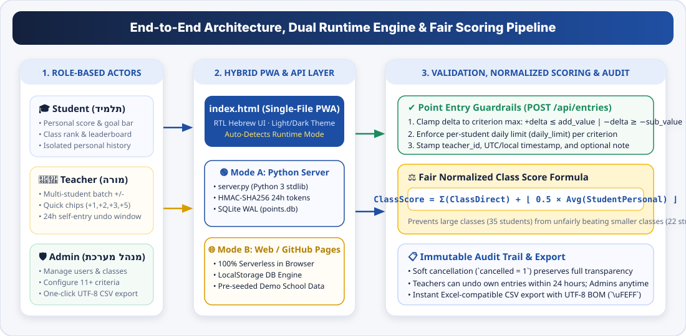
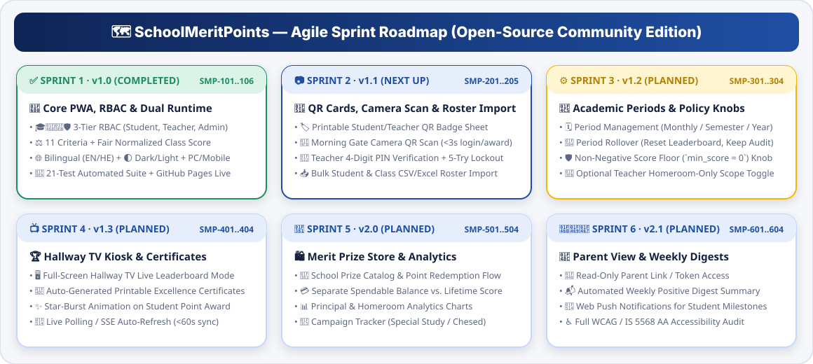

אפליקציית רשת חופשית בקוד פתוח (מותקנת בטלפון, בטאבלט ובמחשב) שסופרת נקודות זכות לכל תלמיד ולכל כיתה. המורים מעניקים ומורידים נקודות בשניות, התלמידים צופים בהתקדמות האישית והכיתתית, ומנהלי המערכת שולטים בהגדרות באופן עצמאי.
לחזק התנהגות חיובית ועבודת צוות בבית הספר בעזרת מערכת נקודות שקופה, הוגנת ומהירה לשימוש. מורה יכול להעניק נקודות לכיתה שלמה בפחות מ-3 שניות. התלמיד רואה מיד על מה קיבל נקודות ואיפה הכיתה שלו מדורגת לעומת שאר הכיתות.

11 הקריטריונים המובנים נטענים אוטומטית בהפעלה הראשונה. מנהל המערכת יכול לערוך אותם, להוסיף חדשים ולהפעיל או להשבית קריטריונים ישירות ממסך הניהול.
| קריטריון | סוג | תדירות מוצעת | הוספה | הורדה |
|---|---|---|---|---|
| 👕 תלבושת | אישי | יומי | +2 | −1 |
| 🧵 ציצית | אישי | יומי | +2 | −1 |
| ⏰ הגעה בזמן | אישי | יומי | +3 | −2 |
| 📚 מבצע חל"ל | אישי | לפי מבצע | +5 | — |
| 🤝 התנהגות בדרך ארץ | אישי | חופשי | +5 | −3 |
| 🧹 סדר וניקיון הכיתה | כיתתי | יומי | +5 | −3 |
| ✨ קירות נקיים | כיתתי | שבועי | +3 | −3 |
| 🎨 כיתה מקושטת | כיתתי | חודשי | +10 | — |
| 🪑 הרמת כיסאות בסוף היום | כיתתי | יומי | +2 | −2 |
| 📋 תורנים כיתתיים | כיתתי | יומי | +3 | −2 |
| 🗄️ כוורות מסודרות | כיתתי | שבועי | +3 | −2 |
המוקאפים מציגים את המבנה ואת סדר העדיפויות בכל מסך. העיצוב הסופי יותאם לסמל ולצבעי בית הספר.
כל השמות והמספרים במוקאפים הם דוגמה בלבד.
גופנים פתוחים וחינמיים: Secular One לכותרות ו-Assistant לטקסט ולמספרים טבלאיים.

| טבלה | שדות עיקריים | הערה |
|---|---|---|
| 👤 משתמשים (users) | מזהה, שם, תפקיד (מורה/תלמיד/מנהל), שם משתמש, סיסמה מגובבת, קוד ברקוד, פעיל | ללא מספר זהות או מידע רגיש |
| 🏫 כיתות (classes) | מזהה, שם (ו'1, ו'2), שכבה, מורה אחראי | |
| 👥 שיוך לכיתה (class_members) | תלמיד, כיתה, שנת לימודים | מאפשר מעבר שנה בלי לאבד היסטוריה |
| 📋 קריטריונים (criteria) | שם, סוג (אישי/כיתתי), ערך הוספה, ערך הורדה, מגבלה יומית, פעיל | נערך באופן עצמאי על ידי המנהל |
| ⭐ פעולות ניקוד (entries) | מזהה, יעד (תלמיד/כיתה), קריטריון, שינוי (+/−), מורה מבצע, חותמת זמן, הערה, בוטל | יומן אירועים נצחי; ביטול מסמן cancelled=1 |
| 📅 תקופות (periods) | שם, תאריך התחלה, תאריך סיום | לדירוגים חודשיים/שנתיים |
sequenceDiagram
autonumber
actor T as 👨🏫 מורה / מנהל
actor S as 🎓 תלמיד
participant UI as 📱 index.html (PWA)
participant API as ⚙️ שרת Python / LocalDemo
participant DB as 🗄️ SQLite / LocalStorage
T->>UI: בחירת כיתה + קריטריון + תלמידים (+3)
UI->>API: POST /api/entries
API->>DB: בדיקת מגבלה יומית ושמירת רשומה
DB-->>UI: +3 נקודות עודכנו!
S->>UI: צפייה בלוח תלמיד ודירוג כיתתי
UI->>API: GET /api/dashboard & /api/history
API-->>S: הצגת ניקוד אישי ומיקום הכיתה (#1)
| רכיב ארכיטקטוני | טכנולוגיה | יתרונות מרכזיים |
|---|---|---|
| 📱 אפליקציית רשת מתקדמת (PWA) פעיל | HTML5 + CSS3 Grid + Vanilla ES2022 | קוד אחד למחשב, לטאבלט ולנייד, התקנה על מסך הבית, אפס תלויות חיצוניות |
| 🐍 שרת בית-ספרי מקומי Mode A | Python 3 Standard Library + SQLite WAL | הרצה בפקודה אחת (`python3 server.py`), מסד נתונים מהיר בקובץ יחיד, בעלות מלאה על הנתונים |
| 🌐 מצב רשת עצמאי (GitHub Pages) Mode B | Client-Side LocalStorage Engine | פועל מכל דפדפן בעולם ללא התקנה, כולל נתוני דמו מובנים וכניסה בלחיצה אחת |
כל משימות ההמשך נאספו לתוכנית ספרינטים מפורטת בקובץ ROADMAP.md:

tests/.